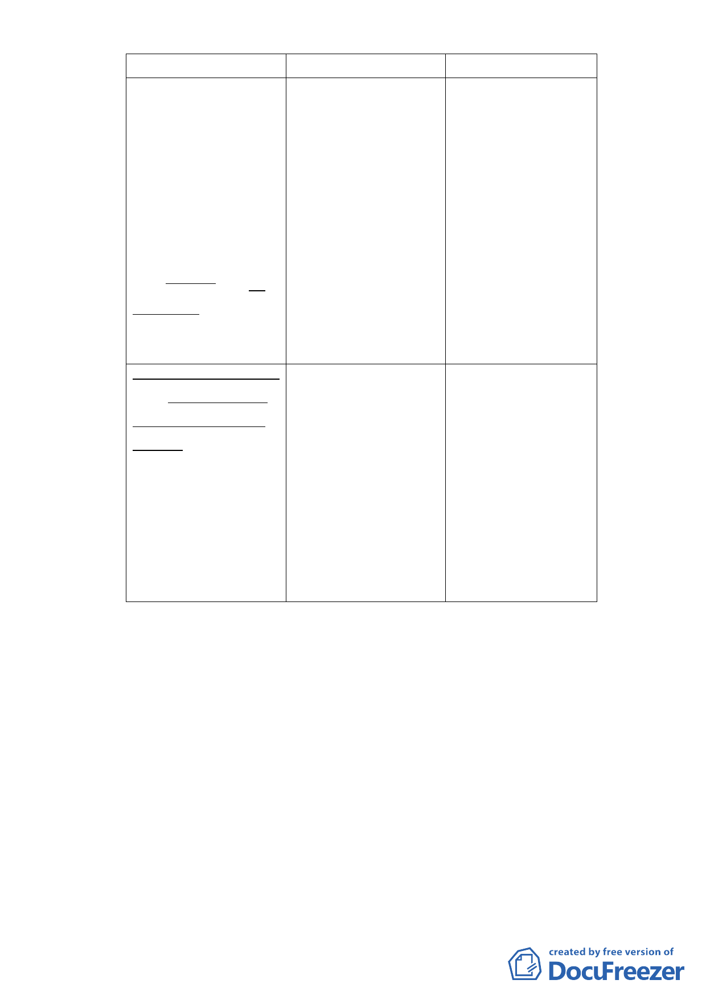

新計畫
原計畫
說明
叁、計畫內容
叁、計畫內容
考量該區已無全街
為採用「大街廓
為採用「大街廓 廓整體開發需求，
整體開發」理念，並 整體開發」理念，並 且應無開發後土地
符合台北市土地因畸 符合台北市土地因畸 畸零破碎之疑慮，
零不整且坵塊過於瑣 零不整且坵塊過於瑣 又為改善居住環
碎而必須採取「整合 碎而必須採取「整合 境、促進地區發
與集約使用」之特 與集約使用」之特 展、提升整體都市
性，本基地開發方式 性，本基地開發方式 環境品質，爰刪除
應採大街廓整體規 應採大街廓整體開發 原計畫大街廓整體
劃，分期開發為原 為原則。
開發規定，修正為
則。
整體規劃，分期開
發為原則。
七、事業及財務計畫 七、事業及財務計畫 考量該區已無全街
本案開發計畫
本案開發計畫 廓整體開發需求，
應由威京公司整體 應由威京公司整體 且應無開發後土地
開發。
開發。
畸零破碎之疑慮，
又為改善居住環
境、促進地區發
展、提升整體都市
環境品質，爰刪除
原計畫整體開發規
定。
五、 全案係市府102年9月12日府都規字第10235776103號函送到
會，102年9月13日起公開展覽30天。
六、 案經提102年10月24日本會第650次委員會議決議：「本案所提
開發方式依委員建議籌組專案小組討論；請黃委員志弘擔任
召集人，…。」經專案小組102年12月10日召開專案小組會議，
獲致結論：
（一）本地區在松山捷運線即將通車、松山新站開發完成、南
港三鐵共構也次第開發，此區也亟需發展變革，委員的共
同想法是希望促成本地區開發帶動周邊地區整體發展；都
市發展局提出本都市計畫變更案，的確盤根錯節、治絲愈
棼，分階段解開一些結，是理想的解決方式與態度。
（二）本案歸納出以下幾點議題，請市府都市發展局釐清後將
修正資料轉呈大會來進行合議研討。本專案小組以5點議
-8-